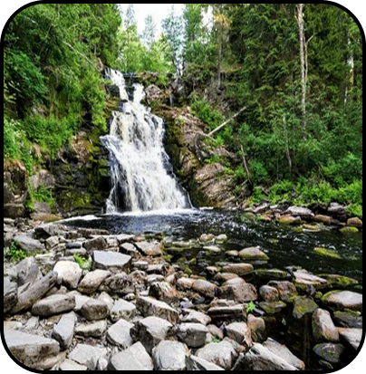

Карелия: Край озер, легенд и северной природы
Республика Карелия — это уникальный уголок России, где дикая природа,
древняя история и самобытная культура создают незабываемую атмосферу
путешествия.
Карелия — это место, где хочется остаться подольше. Откройте для себя
суровую и величественную красоту Русского Севера!

O нас
Добро пожаловать на ваш главный гид по Республике Карелия! Наш сайт
для путешественников, которые мечтают открыть для себя всю
многогранную красоту этого северного края. Карелия — это не просто
точка на карте. Это чувство. Шум сосен на скалистом берегу, отражение
неба в бесконечной глади озера, тишина древних храмов и звонкая мощь
водопадов.
Мы создали этот сайт, чтобы стать вашим проводником в этом
удивительном мире. Наша миссия — не просто рассказать, а вдохновить.
Вдохновить на дорогу, ведущую к новым открытиям, на встречу с суровой
и прекрасной природой Севера, на путешествие, которое останется с вами
навсегда. Найдите свой идеальный маршрут будь то паломничество на
Валаам, восторг от мраморного каньона в Рускеале или уединение в диких
лесах Паанаярви.
Узнайте Карелию с разных сторон: ее духовное наследие, древнюю
историю, запечатленную в петроглифах и богатство активных
развлечений.
Мы верим, что у каждого должна быть своя Карелия. Давайте найдем вашу!


Достопримечательности
"Горный парк “Рускеала"

Главная природная достопримечательность, бывший мраморный карьер. Голубые озера в обрамлении белых мраморных скал.
"Остров Кижи"

Музей-заповедник под открытым небом. Архитектурный ансамбль с всемирно известной 22-главой Церковью Преображения Господня, построенной без единого гвоздя.
"Водопад Кивач"

Второй по величине равнинный водопад в Европе. Мощный поток воды, низвергающийся с гранитных ступеней.
"Валаамский архипелаг"

Действующий Спасо-Преображенский монастырь на скалистых островах в Ладожском озере. Потрясающая природа и монументальные храмы
Горный парк Парк “Паанаярви”

Заповедная территория у границы с Финляндией. Нетронутая тайга, чистейшие озера и одна из самых высоких вершин Карелии — гора Нуорунен.
"Горный парк Водопад Белые мосты"

Один из самых высоких водопадов Карелии, окруженный живописным лесом. Дорога к нему — это уже приключение.
Отели
Карелия предлагает широкий выбор размещения для любого бюджета и запроса: от уютных гостевых домов в глуши до современных спа-отелей с видом на озеро. Мы собрали подборку проверенных и популярных мест для вашего комфортного отдыха.
Бюджетные варианты


Гостевой дом «У Иваныча» (пос. Рускеала)

Хостел «Карелия» (Петрозаводск)
Самый популярный и чистый хостел в центре Петрозаводска. Предлагает как общие номера, так и приватные комнаты. Есть общая кухня, зона отдыха и бесплатный Wi-Fi.
Гостевой дом «У Иваныча» (пос. Рускеала)
Простой, но очень душевный гостевой дом в шаговой доступности от
Горного парка. Хозяева славятся своим радушием и готовы помочь с
организацией экскурсий.
Турбаза «ВелТ» (дер. Велтозеро)
База отдыха в настоящей карельской глубинке, окруженная лесами и озерами. Размещение в домиках-срубах. Идеальная точка для старта сплавов по рекам Шуя и Охта.
Премиум-класс


Дача Винтера (г. Сортавала)
Arctic Circle Lodge (дер. Нильмогуба)
Уникальный бутик-отель у Белого моря, входящий в ассоциацию «Самая красивая деревня России». Полное погружение в природу и арктическую атмосферу. Дизайн в скандинавском стиле.
Дача Винтера (г. Сортавала)
Исторический отель с атмосферой старой Финляндии. Расположен в
здании бывшей дачи знаменитого врача Винтера. Номера с каминами,
антикварной мебелью и видом на залив Ладоги.